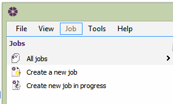

Creating a New Job |
To create a new job for editing, select the 'Create a new job' text in the Jobs panel as shown below.

Alternatively select File > New Job from the menu.
The new job will automatically open in the editor. The user is required to fill in the mandatory details (marked with a red *) by entering the appropriate information for the Job Details.
Please Note: information about the Job Team and Sectional Completion tabs should also be completed. Click on the tabs at the top of the Job Details editor to access the relevant tabs.
See also:
Setting up a New Job
Required Fields in Job Details
Creating a New Job (online demo)